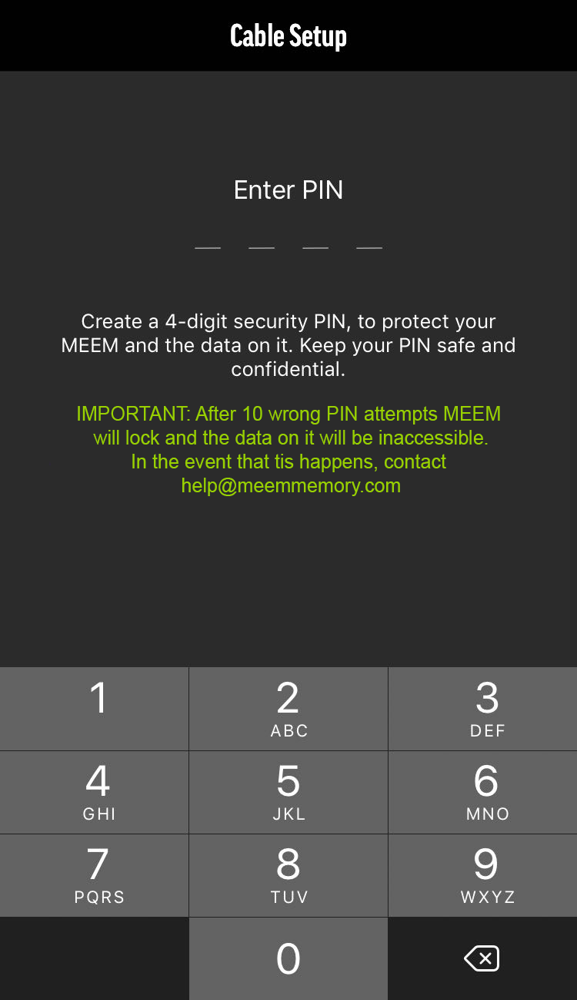

MES DONNÉES PERSONNELLES SUR MEEM

Vos données personnelles stockées sur MEEM sont toujours protégées car le câble lui-même est chiffré. Le seul moyen d'accéder à ces données depuis un autre téléphone est avec votre propre code PIN. De plus, le câble se bloque automatiquement après 10 saisies de code PIN erroné. Donc si vous perdez votre câble, pas d'inquiétude, vos données seront toujours en sécurité.
Paramétrer votre code PIN est extrêmement simple. Lors de votre première utilisation du câble, MEEM vous demandera d'établir un code PIN à quatre chiffres. Pour plus de sécurité, vous devrez entrer votre code PIN à chaque branchement d'un nouvel appareil. VEUILLEZ CONSERVER VOTRE BROCHE DANS UN ENDROIT SÛR CAR IL EST VITAL D'UTILISER PLUS D'APPAREILS AVEC VOTRE CÂBLE MEEM.
Lorsque vous configurez votre NIP, il vous sera également demandé de répondre à 3 questions de sécurité. Vous devez répondre à ces questions car elles vous permettront de réinitialiser votre NIP si vous l'oubliez. Si vous avez oublié votre NIP et que vous essayez d'ajouter un autre appareil, vous pouvez appuyer sur "NIP oublié" à l'écran. Ceci vous posera à nouveau les 3 questions de sécurité. Vous devrez répondre à 2 des questions de sécurité pour authentifier le câble avec votre nouvel appareil. Une fois que vous avez authentifié l'appareil, vous devez aller dans le menu Paramètres et modifier votre NIP. Veuillez sauvegarder ces réponses dans un endroit sûr pour que vous puissiez y connecter de nouveaux appareils plus tard si vous oubliez votre NIP. Si vous oubliez votre NIP et vos réponses de sécurité, vous n'aurez aucun moyen de connecter de nouveaux appareils à votre câble.